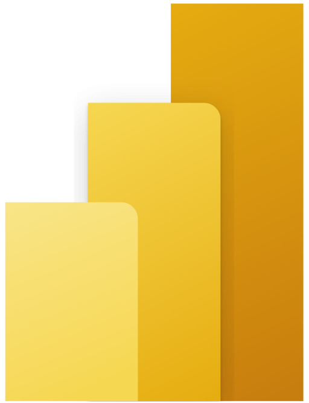
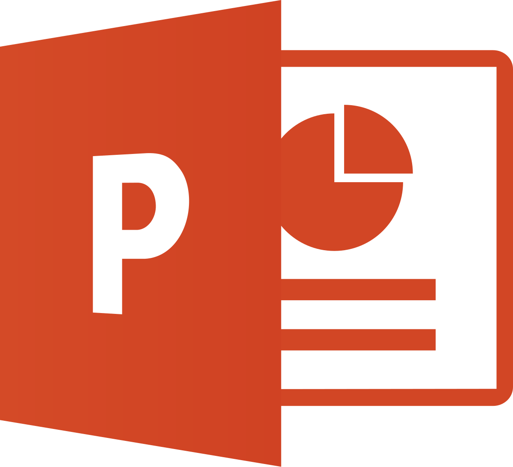
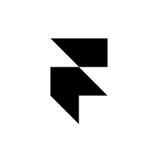

I’m a tech graduate with a growing interest in how technology, data, and strategy come together to solve real business problems. With experience in web development and interaction design, I enjoy building digital solutions that are both functional and user-focused.
I’m inclined toward the MBA mindset of structured thinking and analytics, where insights guide decisions and ideas turn into scalable outcomes. My goal is to work at the intersection of business and technology, contributing to meaningful, tech-driven initiatives.
I’m open to learning, collaborations, and conversations around analytics, web development, and tech-enabled problem solving.
Tools & Technologies I Use









Click a category to explore my work
Early Years
KMD Public School, Jaipur
Foundation in learning and curiosity
Middle School
Eden International School, Udaipur
Built strong academic base and discipline
2018–2020
St Edmund's School, Jaipur
Deep dive into science and critical thinking
2022–2025
JECRC University
Mastered programming and software development
2025–Present
Narayana Business School
Specializing in Business Analytics & Strategy
Open to internships, collaborations, freelance projects, or just a conversation.